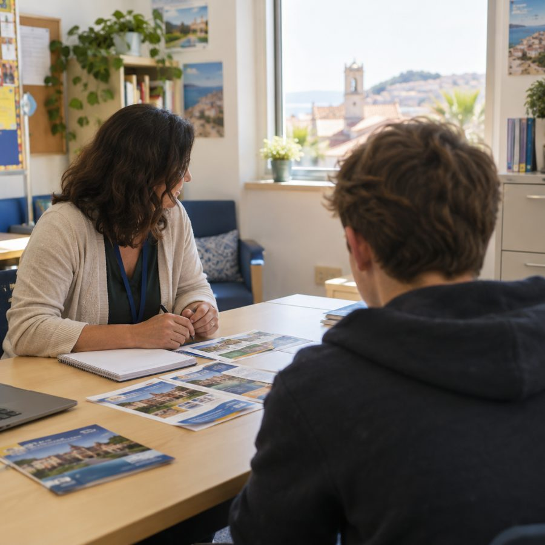
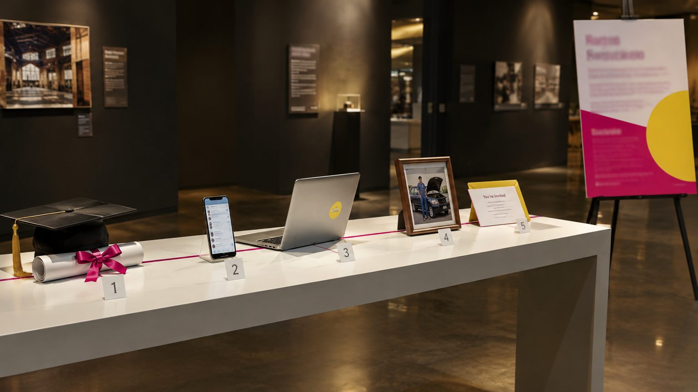
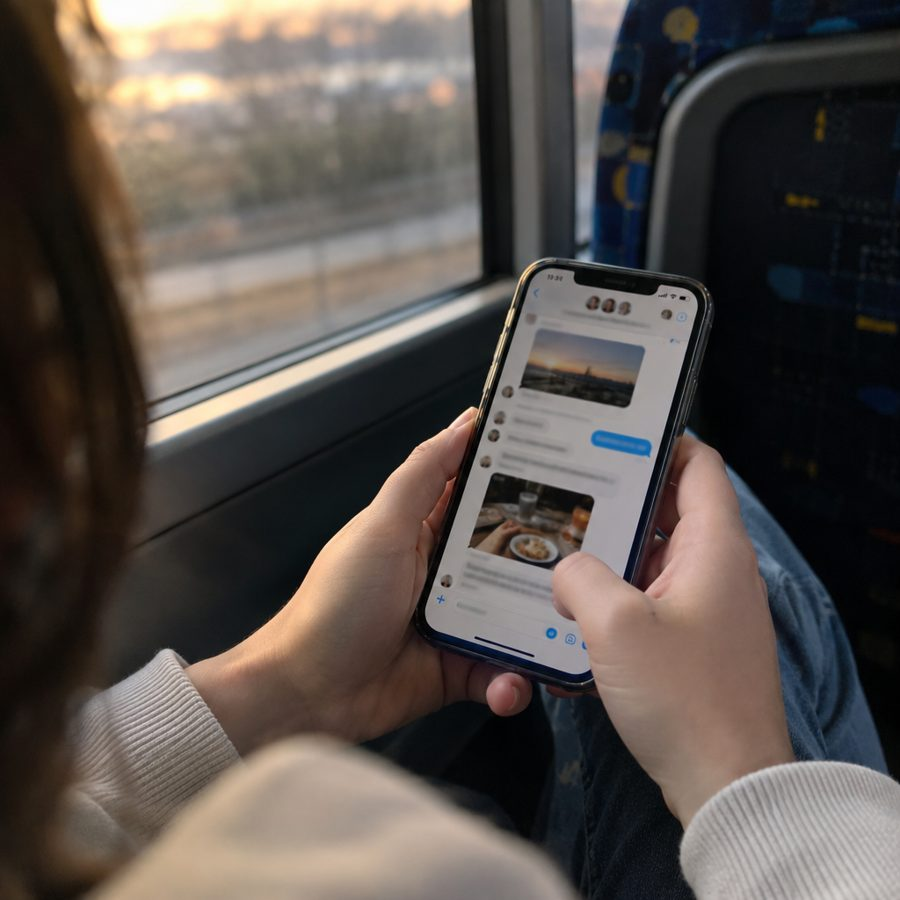
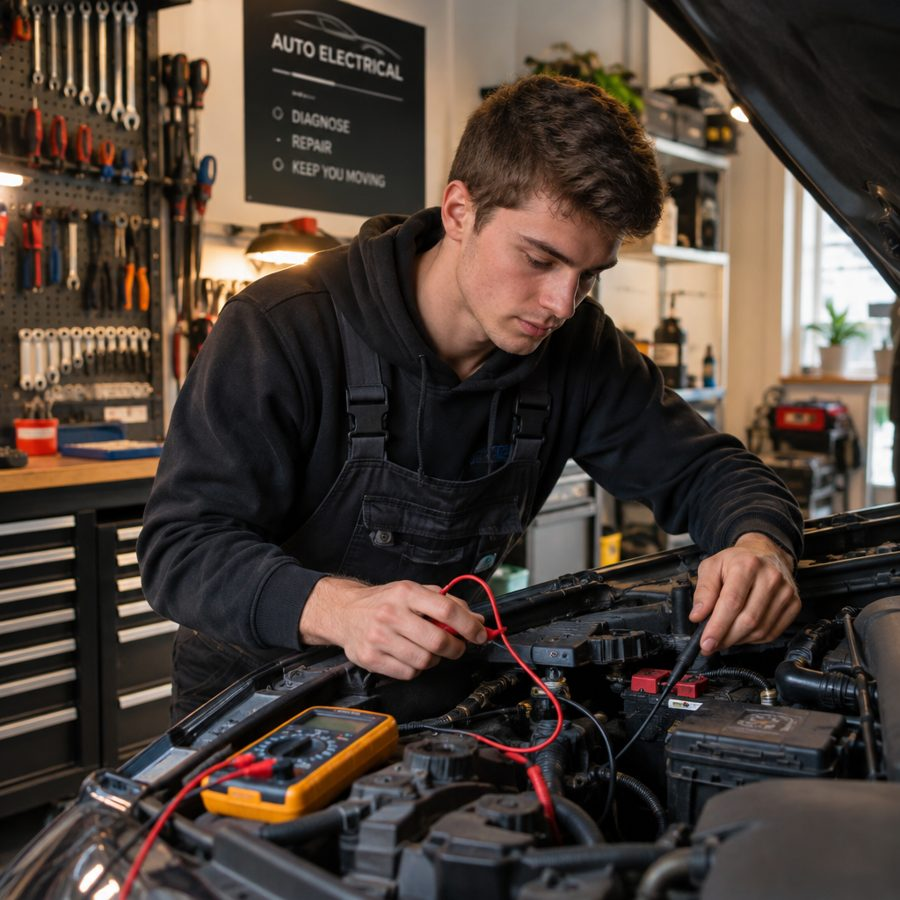
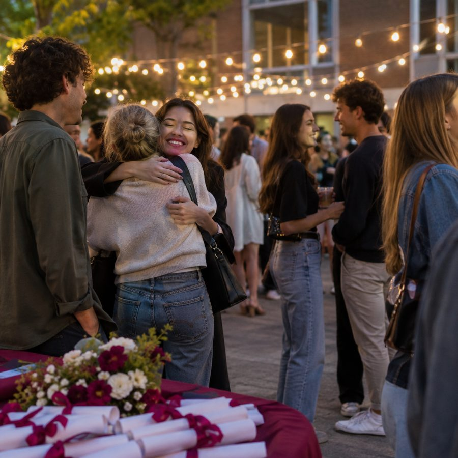

1י״ב · עוד בבית הספר
הקשר נבנה לפני היציאה
מרכז ריאן מלווה את התלמידים כבר בשנות הלימודים. לפני הסיום שואלים כל תלמיד על החלומות והחששות שלו, ומשם מתחיל הליווי.
על השולחן: כובע סיום ותעודה

בית ספר שנשאר כתובת קבועה לבוגרים שלו, מכיתה י״ב ועד הלימודים, העבודה והצעד הבא. מסלול של מוביליות חברתית, בשיתוף מרכז ריאן והופה.
חמש תחנות, חפץ אחד בכל תחנה. מי שעובר לאורך השולחן עובר את הדרך של בוגר.

1מרכז ריאן מלווה את התלמידים כבר בשנות הלימודים. לפני הסיום שואלים כל תלמיד על החלומות והחששות שלו, ומשם מתחיל הליווי.

2קבוצת בוגרים פעילה וקשר אישי שוטף. הבוגרים יודעים שבית הספר שעזבו פתוח ומוכן לתת עזרה ותמיכה.
לבוגרים שהתחילו ללמוד, דרך המענים של הופה. כלי עבודה ביד מהרגע שהלימודים מתחילים.

4ובוגר ממחזור קודם: היום עצמאי בחשמל רכב ומפקח. זו המוביליות שהליווי מכוון אליה.
"תודה לבית ספר"

5חלוקת תעודות ומפגש לשמירת קשר. הבוגרים חוזרים לבית הספר, והקשר ממשיך לשנה הבאה.